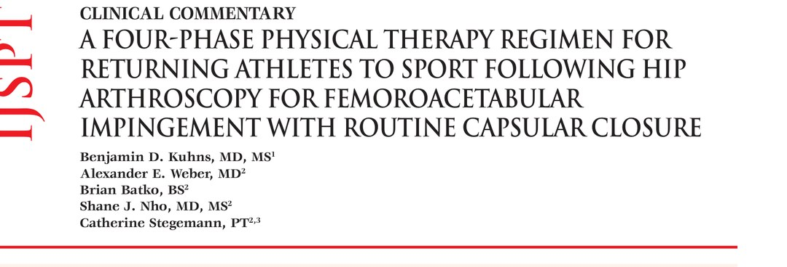
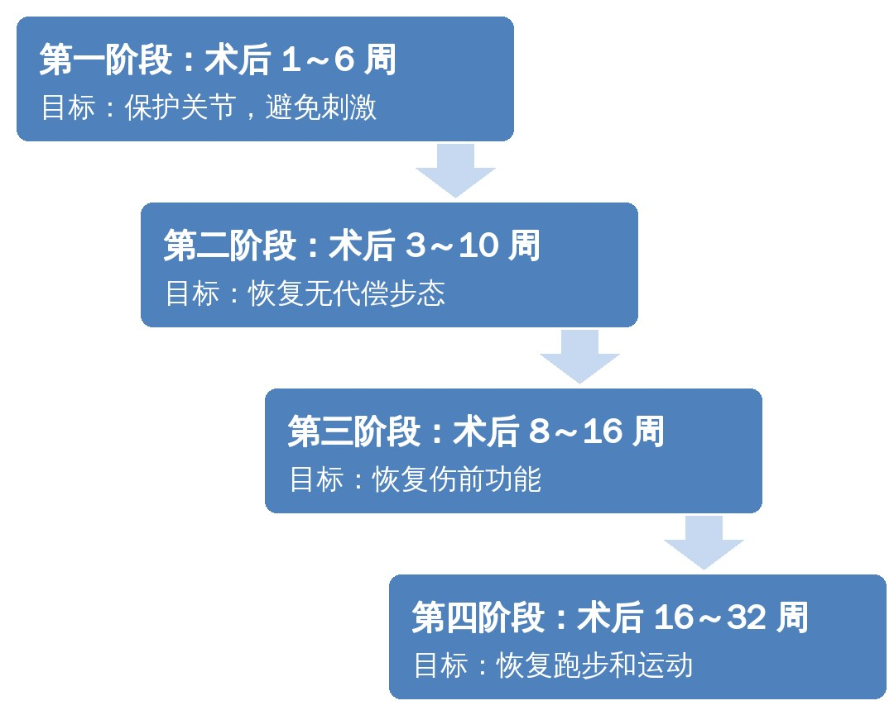
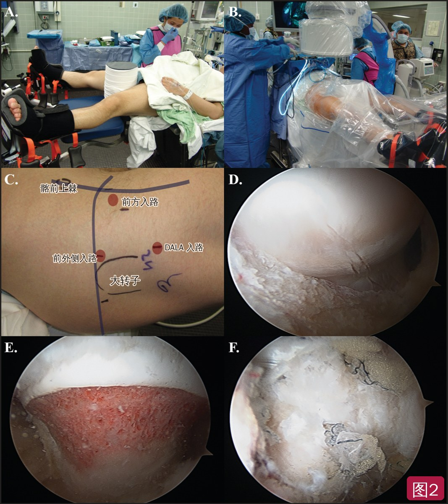
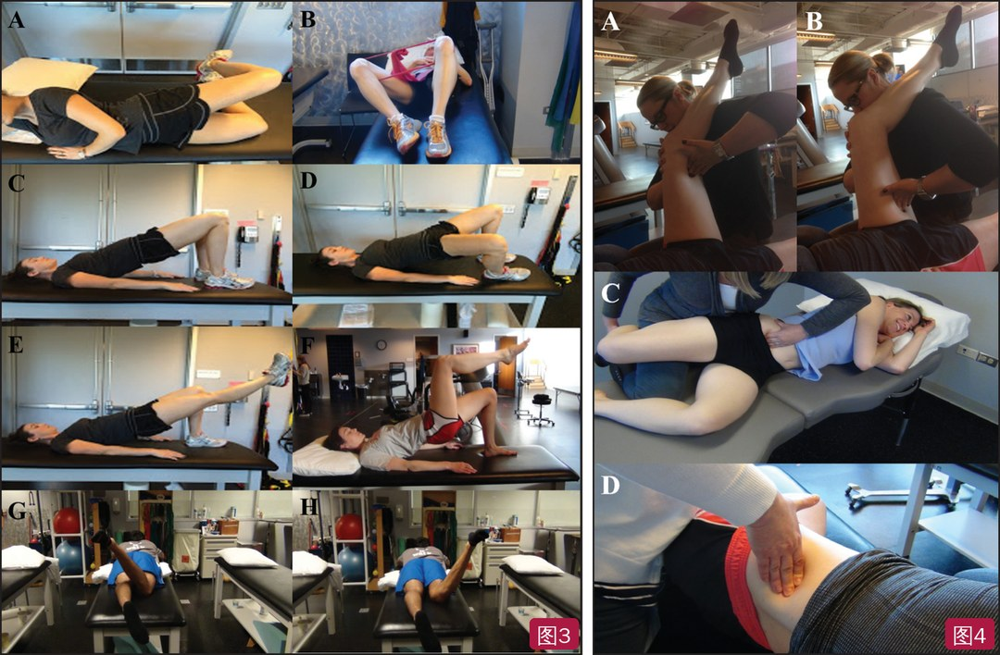
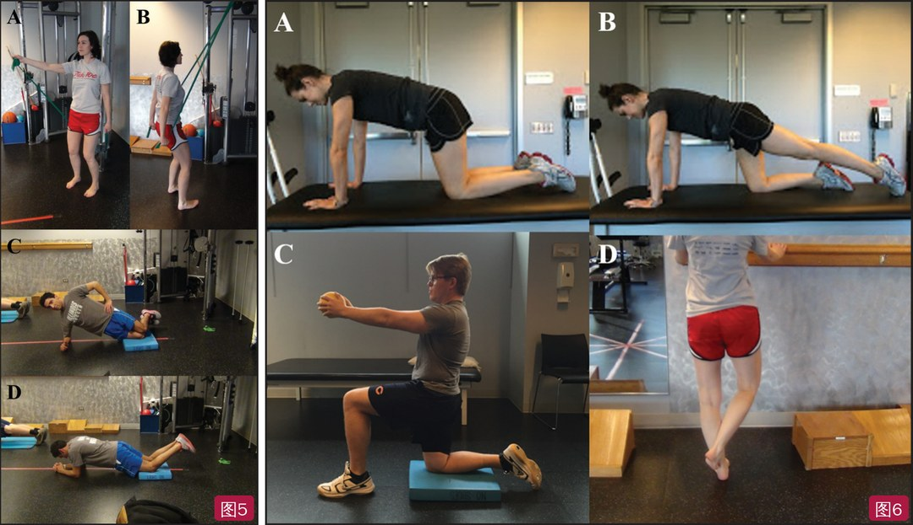
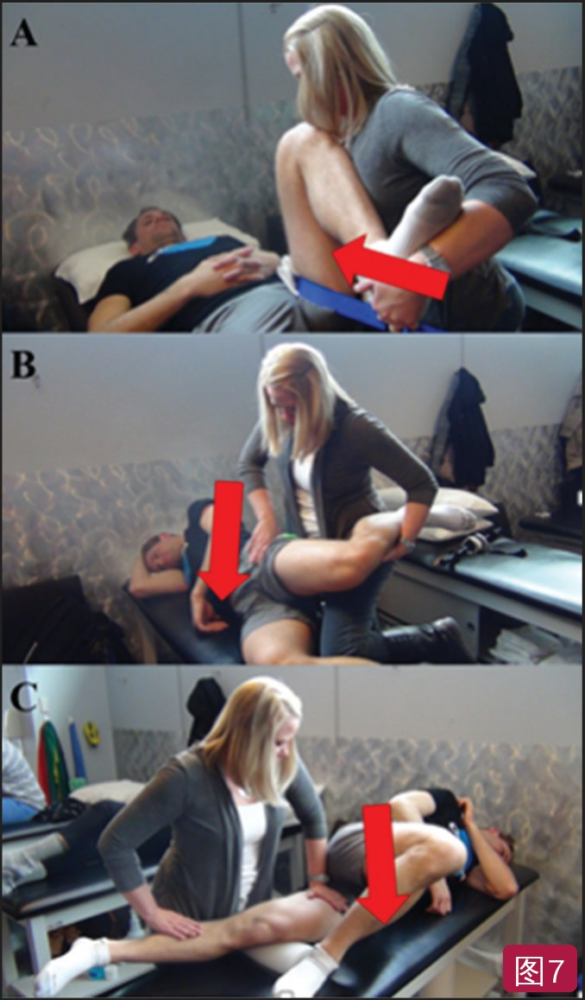
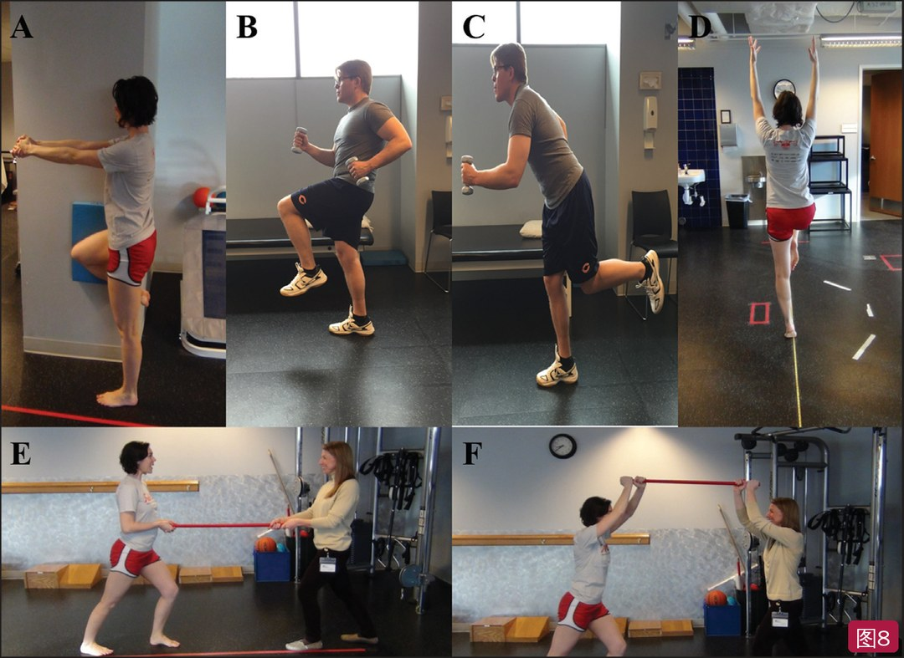
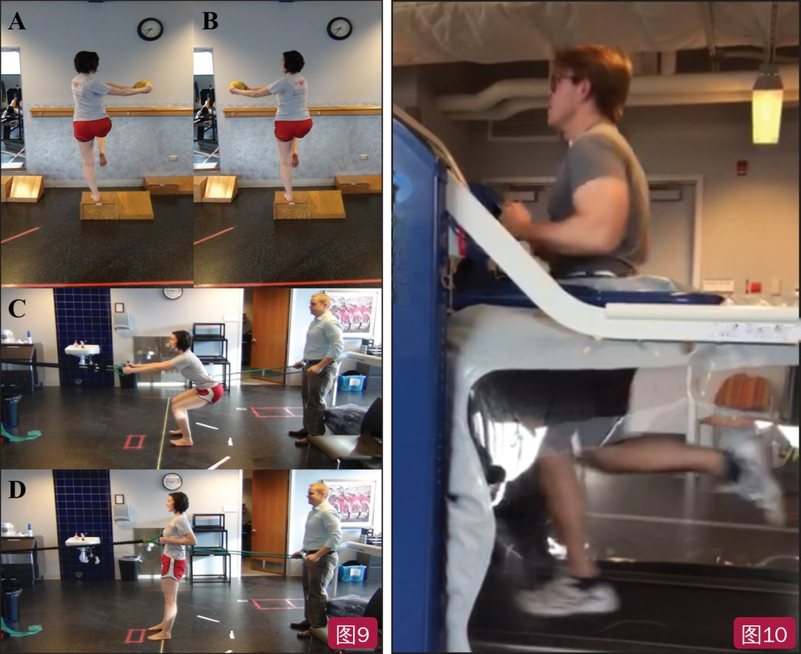

🔖原文首页（IJSPT 2017 年第 12 卷第 4 期）
📚 文献卡片
▪ 英文原题：A Four-Phase Physical Therapy Regimen for Returning Athletes to Sport Following Hip Arthroscopy for Femoroacetabular Impingement with Routine Capsular Closure（常规关节囊缝合的髋关节镜 FAI 术后：帮助运动员重返运动的四阶段物理治疗方案）
▪ 作者：Benjamin D. Kuhns, MD, MS · Alexander E. Weber, MD · Brian Batko, BS · Shane J. Nho, MD, MS · Catherine Stegemann, PT
▪ 机构：罗切斯特大学医学中心骨科与康复系；Rush 大学医学中心运动医学科髋关节保留中心；Midwest Orthopaedics at Rush 物理治疗部
▪ 期刊：International Journal of Sports Physical Therapy（IJSPT）
▪ 年卷期：2017;12(4):683-696
▪ PMCID：PMC5534158
▪ 文章类型：临床评论（Clinical Commentary）
▪ 证据级别：5 级
▪ 关键词：femoroacetabular impingement · four phase rehabilitation · hip arthroscopy · return-to-sport · routine capsular closure
股骨髋臼撞击症（FAI）多见于年轻、爱运动的人群，他们对重返运动的期望很高。保守治疗无效时，很多骨科医生会选择髋关节镜矫正骨性畸形并修复软组织。手术做得好只是一半，术后康复是否细致、到位同样决定最终结局。
过去二十年，关节镜技术进步很快：盂唇处理从早期只能清理，发展到现在可以修复、重建。另一个变化是关节囊的处理——越来越多的研究显示，常规缝合关节囊的患者临床结局更好。康复方案也应随之调整。
本文来自一家高手术量的髋关节镜中心（资深术者 Shane J. Nho），介绍关节镜 FAI 术后常规缝合关节囊时，帮助运动员重返运动的四阶段物理治疗方案，并给出各阶段的进阶标准和常见陷阱（图1）。

🔖图1：常规关节囊缝合的髋关节镜 FAI 术后四阶段重返运动流程（原图为英文，已按原内容中文重绘）
| 阶段 | 时间 | 目标 | 关键内容 |
|---|---|---|---|
| 一 · 保护关节 | 1～6 周 | 保护关节、避免刺激；6～8 周活动度对称 | 限制活动范围；20 磅平足负重；固定自行车、CPM、被动活动；等长收缩；软组织松动 |
| 二 · 完全负重 | 3～10 周 | 无代偿步态 | 脱拐；水中训练；闭链训练；第 5～6 周起关节松动；第 6 周起椭圆机 |
| 三 · 恢复伤前功能 | 8～16 周 | 恢复伤前水平 | 全平面动态训练；第 10 周起负重旋转；第 12 周起跑步机步行 |
| 四 · 跑步与运动 | 16～32 周 | 重返运动 | 16 周起减重跑台跑步（普通跑台 20 周）；敏捷、变向、增强式训练 |
一句话概括：关节囊缝合后，前 3 周别伸髋过中立位、别主动直腿抬高；后期加入 I～III 级关节松动，IV～V 级禁用。
• 适应证：年轻、活跃、诊断 FAI，经非甾体抗炎药、物理治疗、皮质类固醇注射等保守治疗无效
• 患者仰卧于髋关节镜手术台，会阴柱充分衬垫，牵引下经前外侧入路和改良前方入路进入中央间室（图2A～C）
• 做约 2～4 cm 的入路间关节囊切开，处理盂唇、软骨面和髋臼缘
• 松开牵引进入外周间室，经远端前外侧辅助入路（DALA）做 T 形关节囊切开，行股骨骨软骨成形术处理凸轮（cam）畸形（图2D）
• 术中动态透视确认切除完整、无残留畸形（图2E）
• 最后完整缝合关节囊：纵行部分 3 针、入路间部分 2 针，均为 #2 高强度缝线单纯间断缝合（图2F）
• 术后佩戴限制髋外展和旋转的支具，出院后立即开始康复

🔖图2：FAI 关节镜手术过程。A 仰卧位，会阴柱充分衬垫；B 牵引髋关节并无菌消毒铺巾；C 术前髋部入路标记；D 经 T 形关节囊切开所见的凸轮畸形；E 凸轮畸形切除完成；F 关节囊缝合完成（C 图英文标注已改为中文）
• 目标：关节愈合；若对侧下肢无功能障碍，6～8 周时双侧活动度对称
• 负重：20 磅（约 9 kg）平足负重——限制负重是因为有股骨颈骨折的报道；选平足而不选足尖点地，是为了避免跟腱、屈髋肌挛缩和下肢僵硬
• 活动范围：屈曲 90°、外旋 30°、屈髋 90° 位内旋 20°、外展 30°；伸展限制在中立位，关节囊修复后尤其如此
• 避免主动开链屈髋；不做主动直腿抬高；每次坐着不超过 30 分钟
• 术后第 1 天首次治疗：直立固定自行车 20 分钟（无阻力），教会患者和照护者使用支具与 CPM
• 被动活动：中立位及屈 20°～30° 位的髋环转、滚木（log roll）
• 等长训练：股四头肌、臀肌、腹横肌（TA）激活
• 前两周家庭方案（每天 2 次）：直立自行车 20 分钟；CPM 3 小时（没有自行车则 4 小时）；被动活动 20 分钟；等长训练各 20 次
• 每天俯卧 2 小时，预防屈髋挛缩；Voight 等发现臀肌等长收缩可预防髂腰肌痉挛、减轻前髋痛
• 每次门诊：直立自行车 20 分钟 + 软组织松动（STM）20～30 分钟 + 训练（图3）
• STM 重点：内收肌群、腰方肌（QL）、阔筋膜张肌（TFL）、髂腰肌（IP），用于松动瘢痕、预防软组织挛缩（图4）
• 站立位抗阻肩后伸和交替肩胛平面上举，配合臀肌等长收缩，可在闭链位改善核心募集和稳定（图5）
• 术后 3 周开始脱拐；若做了微骨折，拐杖用到 6 周

🔖图3（左）：第一阶段训练——蚌式开合（A）、弹力带辅助屈膝外倒（B）、桥式进阶（C～F）、俯卧髋内旋（G）、俯卧髋外旋（H）；图4（右）：软组织松动——内收肌群（A～B）、髂腰肌（C）、腰方肌（D）
• 关节囊及周围肌肉术后炎症迁延、屈髋肌腱炎、下腰痛和骶髂关节痛
• 下腰痛：多做 QL 的 STM，避免骨盆扭转；屈髋肌腱炎多因过早主动开链屈髋，常见于足尖点地或不负重步态
• 代偿步态常是下腰痛和屈髋肌腱炎的根源，术后行走宣教非常关键
作者不用正式的进阶标准，但要求：无代偿步态；不忍痛加速；疼痛控制好、水肿消退；力量足以不用助行器行走；近端控制足以进阶闭链训练。阻碍进阶的情况包括：疼痛、Trendelenburg 步态或代偿性 Trendelenburg 步态、躯干侧移、腹部和下肢近端控制不足。
表1 第一阶段康复
| 第一阶段 术后第 1～6 周 | |
| 目标 | 保护关节、避免刺激 6～8 周时活动度对称 |
| 就诊频率 | 每周 2 次 |
| 髋活动范围限制 | • 屈曲 90°（2 周） • 外展 30°（2 周） • 伸展 0°（3 周） • 屈髋 90° 位外旋 30°（3 周） • 屈髋 90° 位内旋 20°（3 周） • 20 磅平足负重（3 周） • 每次坐着不超过 30 分钟（3 周） • 手术侧下肢不主动抬起（4 周） |
| 技术 | • 手法治疗每次 20～30 分钟（第 1～6 周）：仰卧位软组织松动，重点 TFL、IP、QL；被动活动，包括仰卧外展、屈曲、俯卧内/外旋，以及中立位和屈髋 90° 位的仰卧环转 • 等长训练（股四头肌、内收肌、臀肌、仰卧 TA）（第 1～2 周） • 蚌式/反蚌式（第 1～3 周） • 屈膝外倒配合 TA 激活（第 1～3 周） • 俯卧髋内外旋、腘绳肌弯举 • **训练和手法治疗由治疗师酌情安排，但不应超过患者的疲劳耐受 |
ROM：活动范围；ER：外旋；IR：内旋；FFWB：平足负重；TFL：阔筋膜张肌；IP：髂腰肌；QL：腰方肌；TA：腹横肌；LBP：下腰痛
目标是平稳过渡到完全负重，不出现有害的代偿策略。作者认为本阶段最难的是让患者顺利脱拐。切口完全愈合后，第 3 周可开始水中训练——不是必选项，但有助于脱拐、改善活动和神经肌肉控制、纠正步态。
• 四点跪位前后摇摆、交替肩前屈配合伸髋
• 站立各方向重心转移、站立双腿屈膝（微蹲）、俯卧伸髋、高跪位训练，所有训练都强调核心激活（图6）
• 第 5 周起开始分级关节松动，做后向和下向滑动（图7）
• 每次 STM 至少 20 分钟，针对活动受限、预防软组织激惹和肌腱炎、松动入路周围瘢痕

🔖图5（左）：第一阶段核心强化——站立位抗阻肩后伸和交替肩胛平面上举，配合核心和臀肌等长收缩；图6（右）：第二阶段早期训练——四点跪位摇摆及对侧伸髋 + 肩前屈（A～B）、半跪位核心激活（C）、负重位臀中肌等长激活（D）

🔖图7：第二阶段的后向和下向关节松动——下向束带股骨滑动（A）、由外向内/向下股骨滑动（B）、由内向外股骨滑动（C）
• 前进和后退椭圆机，低阻力、短时间开始
• 单腿平衡 + 非手术侧等长外展、髂腰肌离心训练、撑杖行走、腹内斜肌拉伸、负重髋内外旋
• 功能性行走时核心、臀肌、腓肠肌协同收缩；单腿站立 + 对侧屈伸髋（图8）

🔖图8：第二阶段后期功能性训练——手术侧单腿平衡 + 非手术侧等长外展（A）、单腿站立 + 对侧屈伸髋（B～C）、核心/臀肌/腓肠肌协同收缩的功能性行走（D）、撑杖行走（E～F）
主要陷阱是活动量和活动范围增加时髋部肌肉过度激活。例如术后髂腰肌无力，会让股直肌、阔筋膜张肌、缝匠肌等次要屈髋肌过度激活而出现屈髋肌腱炎。每次治疗做 STM，训练时给予触觉和口头提示，可以减少这类问题。
进入第三阶段：近端和远端控制良好；疲劳时不出现代偿；整个治疗过程疼痛轻微（0～10 分量表比基线高不超过 1～2 分）。
表2 第二阶段康复
| 第二阶段 术后第 3～10 周 | |
| 目标 | 无代偿步态进阶 |
| 就诊频率 | 每周 2 次 |
| 技术 | • 开始水中训练（第 3 周起，如条件允许且切口已愈合）：提踵、侧步、上肢训练激活核心、微蹲 • 继续手法治疗 • 站立前后和左右重心转移（第 3～4 周） • 后退和侧向行走（第 3～4 周） • 站立双腿屈膝（第 3～4 周） • 俯卧伸髋（第 3～5 周） • 高跪位训练（第 3～6 周） • 开始前进和后退椭圆机，无阻力（第 6 周） • 关节松动（第 6～10 周） • 双腿下蹲进阶（第 6～10 周） • 前向上台阶，从 0.2 米开始，按耐受逐步加高到 0.5 米（第 6～10 周） • 改良平板支撑和侧平板支撑，配合对侧肢体运动（第 6～10 周） |
重点是所有髋运动平面上的动态训练。本阶段比前两阶段更个体化，对髋要求高的患者可能持续更久。
• 加入弓步、分腿蹲、侧步、后退走，补充第二阶段末的单腿平衡、下蹲和躯干旋转
• 关节松动和 STM 按需继续，处理骨盆排列不良、肌肉过度激活，预防肌腱炎
• 侧平板支撑 + 对侧下肢三平面运动、弹力绳划船 + 抗阻下蹲、不激活屈肌的核心卷起（图9）
• 本阶段后期引入髋旋转训练；敏捷训练推迟到第四阶段
• 第 12 周起跑步机步行，可用减重跑台（AlterG）辅助轻跑：速度和体重百分比可分别调节，能在减重下更早开始跑步；Saxena 等在跟腱修复后发现，可比普通跑台提早约 2 周恢复完全负重和跑步
• 每次只改一个变量（体重或速度），同时观察代偿性跑姿

🔖图9（左）：第三阶段训练——在髋运动中加入旋转（A～B）、弹力绳辅助下蹲（C～D）；图10（右）：第四阶段跑步时的“三重伸展”（跑台上的英文商标已去除）
• 最常见的问题来自急于恢复活动：软组织活动度下降、步态或跑姿异常复发、疼痛增加、髋周肌腱炎、骨盆排列不良复发
• 跑量增加时留意：股骨内旋增加、过度旋前、髋下沉/膝外翻、摆臂不对称；出现就放慢跑步进阶
• 进入第四阶段：无痛完成全部第三阶段训练，跑步和其他功能活动中保持良好的近端和远端控制
表3 第三阶段康复
| 第三阶段 术后第 8～16 周 | |
| 目标 | 恢复伤前水平 |
| 就诊频率 | 每周 2 次 |
| 限制 | • 第 16 周前不做敏捷训练 • 第 10 周前不做负重髋旋转 • 第 12 周前不上跑步机走 |
| 技术 | • 按需手法治疗 • 抗阻侧步和后退走（第 8～16 周） • 单腿平衡下蹲、躯干旋转（第 8～16 周） • 平板支撑和侧平板支撑（第 8～16 周） • 单腿桥（第 8～16 周） • 负重髋旋转训练（第 10～16 周） |
目标是完全回归专项或休闲运动，重点是爆发力、耐力和敏捷。训练常按专项定制，常见的有跳箱、侧向变向、剪刀跳、单腿蹲。
• 跑步评估：16 周起在减重跑台上做，或 20 周起在普通跑台上做
• 开始跑步的前提：步态完全无症状，能完成全部第三阶段训练且不过度疲劳
• 减重跑台的优势：在部分负重条件下识别和纠正错误或代偿跑姿
• 关键是看全负重跑步时有没有“三重伸展”——伸髋、伸膝、踝跖屈同时完成，蹬地才有力；伸髋保证步幅、让髋保持接近中立位（图10）
• 用口头和触觉提示保证跑姿正确
• 常见缺陷：单腿蹲时 Trendelenburg 或代偿性 Trendelenburg；侧向敏捷测试时膝外翻
• 多数机构要求通过一系列功能性重返运动测试（无痛跑、跳、侧向敏捷、单腿蹲）；作者不要求正式测试，以全面的跑步评估为主
表4 第四阶段康复
| 第四阶段 术后第 16～32 周 | |
| 目标 | 重返运动 |
| 就诊频率 | 每周 2 次 |
| 限制 | 进入第四阶段前，先评估功能性力量和近端控制 |
| 技术 | • 跑步：减重跑台 16 周起，普通跑台 20 周起 • 敏捷训练（第 20～32 周） • 变向（第 24～32 周） • 增强式训练（第 24～32 周） • 专项重返运动训练（第 24～32 周） |
表5 进阶标准
| 阶段 | 进入下一阶段的标准 |
|---|---|
| 1 | • 力量足以不用助行器行走 • 疼痛控制良好 |
| 2 | • 训练中近端和远端控制良好 • 无疲劳导致的代偿动作 • 治疗中疼痛轻微（0～10 分量表比基线高 1～2 分以内） |
| 3 | • 无痛完成全部第三阶段训练 • 跑步和功能活动中保持良好的近端和远端控制 |
| 4 | • 通过减重跑台或普通跑台的跑步评估 • 通过相应的重返运动功能测试 |
表6 髋关节镜 FAI 术后康复的要点与陷阱
| 阶段 | 要点 | 陷阱 |
|---|---|---|
| 1 | • 6 周内不给前关节囊施加应力 | • 关节囊僵硬 • 屈髋肌腱炎 • 代偿动作引起的下腰痛 • 超出患者疲劳耐受 |
| 2 | • 给予触觉和口头提示，建立无代偿步态 • 患者在已有训练中近端控制良好时才进阶 • 做了微骨折者，所有负重训练推迟到第 6 周 • 不要强行屈髋、伸髋和外旋 • 手法治疗中可加入束带松动 | • 疼痛、疲劳或关节受限导致的代偿步态 • 过早脱拐 • 步态异常 • 髋内收肌和阔筋膜张肌过度激活 • 训练和行走中伸髋减少 |
| 3 | • 按需继续处理特定的活动受限 • 以功能性训练为主 • 神经肌肉控制良好才进阶 | • 步态异常或骨盆排列不良 |
| 4 | • 活动中肌肉过度激活 | • 在第四阶段变向/敏捷训练前做跑步分析 |
注：第 4 阶段的“要点”和“陷阱”两栏内容看起来像是放反了，此处按原表照译。
• 早期关节镜 FAI 手术常做扩大的关节囊切开甚至切除，以便看清股骨侧凸轮畸形；近年才开始重视关节囊
• 不缝合关节囊，医源性不稳越来越受关注：已有 FAI 术后髋脱位和半脱位的病例报告；关节囊缺损已成为翻修手术的原因之一
• Frank 等：完全缝合关节囊者，术后专项运动能力优于部分缝合者
• Wylie 等：33 例未缝合关节囊而出现症状性不稳的患者，翻修时完全缝合后两年患者报告结局改善
• 生物力学研究也支持保持关节囊完整的重要性
• 本方案参考了多份专家意见、临床评论和美国物理治疗协会骨科分会的非关节炎性髋痛临床实践指南；时间框架和分阶段进阶与已有方案相似，改动主要针对已缝合的关节囊
• 重点保护前关节囊和盂唇：过度屈髋或伸髋超过中立位都可能影响愈合
• 关节囊不缝合时禁做关节松动：会加重疼痛，并可能引起医源性不稳（半脱位或脱位）
• 关节囊缝合后则推荐做关节松动，预防关节囊过度僵硬、肌肉保护性紧张和术后疼痛
• 从 I 级开始，按耐受进阶到 III 级；手法包括：徒手或束带辅助向下股骨滑动、由前向后、由外向内、由内向外、由后向前股骨滑动（图7）
• IV～V 级松动禁用，避免缝合后关节囊过度松弛（表7）
• 患者术前关节囊松弛程度不同，开始松动前治疗师应与术者沟通术中关节囊质量和修复情况
• 松动不足的后果：步态缺陷、活动度下降、重返运动延迟；作者发现关节囊缝合后做松动，能减少术后关节活动不足、加快康复进程
表7 分级关节松动
| 分级 | 描述 |
|---|---|
| I | 在可用活动范围起始处做小幅度运动 |
| II | 在可用活动范围内做大幅度运动 |
| III | 做到达活动范围末端的大幅度运动 |
| IV | 在活动范围最末端做小幅度运动 |
| V | 在可用范围末端、解剖范围以内做小幅度高速推动（即手法整复） |
关节囊缝合后只用 I～III 级；IV～V 级禁用
• 要重返高强度运动，患者需要具备高速和低速力量，能产生爆发力
• 目前缺乏针对髋关节镜、经过验证的重返运动评估
• Vail 髋运动测试（由 Vail 运动测试修改而来）满分 20 分：单腿蹲 3 分钟（6 分，每 30 秒 1 分）；侧向和斜向跳跃各 100 秒（5 分，每 20 秒 1 分）；向前箱式弓步 2 分钟（4 分，每 30 秒 1 分）
• 团身跳测试原用于 ACL 康复，也已改良用于髋关节镜人群
• 未来更需要考虑髋关节独特旋转特点的髋专项测试
• 作者的经验：患者能以正确跑姿、且不易疲劳地完成跑台跑步时，就可以开始重返运动
• 证据级别低：5 级临床评论，基于单一高手术量中心的经验和文献，没有报告采用该方案患者的结局数据
• 参照性强：给出了具体的活动范围限制、负重量、每周训练内容和明确的时间窗，可操作性好
• 特色：把“关节囊是否缝合”作为康复决策变量——缝合后才做 I～III 级关节松动
• 时间节点前后不一：关节松动的开始时间，正文写“第 5 周”，表 2 写“第 6～10 周”；临床上可按第 5～6 周起、以耐受为准理解
• 原文小瑕疵：表 6 第四阶段的“要点/陷阱”两栏疑似放反；正文个别句子不完整（如第四阶段“a thorough return to running evaluation beginning at 16 weeks…”缺谓语）
• 第一阶段负重：“20 磅平足负重”是绝对值，体重差异大时需要结合手术医生意见调整
① 保护期（1～6 周）：20 磅平足负重，伸髋不超中立位，避免主动开链屈髋；自行车 + CPM + 被动活动 + 等长 + STM
② 负重期（3～10 周）：难点是脱拐；水中训练、闭链、第 5～6 周起关节松动、第 6 周起椭圆机
③ 功能期（8～16 周）：全平面动态训练，第 10 周负重旋转，第 12 周跑台步行，敏捷推迟
④ 回归期（16～32 周）：减重跑台 16 周 / 普通跑台 20 周起跑，看“三重伸展”，再加敏捷、变向、增强式
⑤ 关节囊缝合后：I～III 级关节松动有益，IV～V 级禁用；未缝合则禁做松动
⑥ 贯穿始终：每次 STM，留意屈髋肌腱炎和代偿步态，不忍痛赶进度
欢迎关注骨科康复小黄公众号，获取更多物理治疗的专业知识！
📄参考文献：
Kuhns BD, Weber AE, Batko B, Nho SJ, Stegemann C. A Four-Phase Physical Therapy Regimen for Returning Athletes to Sport Following Hip Arthroscopy for Femoroacetabular Impingement with Routine Capsular Closure. Int J Sports Phys Ther. 2017;12(4):683-696. PMCID: PMC5534158.
文中图片均来自原文：图 1 按原内容中文重绘，图 2C 英文标注已改为中文，图 10 跑台英文商标已去除；表 1～7 已译为中文，仅用于学术交流。